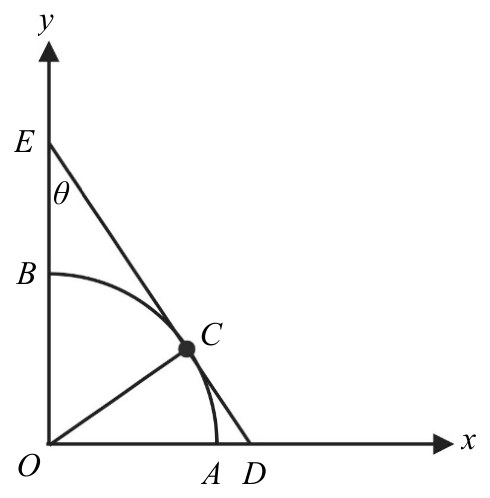
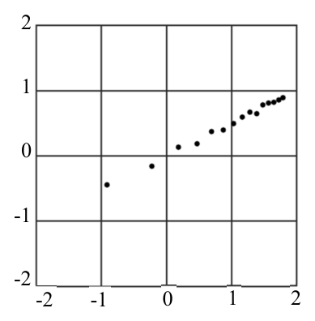

112 年學科能力測驗數學A試題與答案
這一頁是民國 112 年學科能力測驗數學A的整份歷屆試題，共 20 題，題目與標準答案出自大考中心 學測歷年試題（依著作權法 §9，考試試題不受著作權保護），其中 20 題附有詳解。以下逐題列出題幹、選項與答案；要計時作答或記錄成績，請用線上練習。
線上作答這一科 →
全部 20 題
第 1 題
若在計算器中鍵入某正整數 \(N\)，接著連按「\(\sqrt{\phantom{x}}\)」鍵（取正平方根）3 次，視窗顯示得到答案為 2，則 \(N\) 等於下列哪一個選項？
- （A）\(2^{3}\)
- （B）\(2^{4}\)
- （C）\(2^{6}\)
- （D）\(2^{8}\)
- （E）\(2^{12}\)
答案：（D）
詳解與考點
正解：連按 3 次平方根鍵，就是依序取 2 次、4 次、8 次方根；因此選擇 8 次方後能回到 2 的選項。設第一次開根後為 N^(1/2)，第二次為 N^(1/4)，第三次為 N^(1/8)。題設顯示 2，所以 N^(1/8)=2。兩邊同取 8 次方，N=2^8=256。D：2^8 符合，故 D 為正解。
A：N=2^3 時，連按 3 次後為 (2^3)^(1/8)=2^(3/8)，不等於 2，A 錯誤。
B：N=2^4 時，連按 3 次後為 (2^4)^(1/8)=2^(4/8)=2^(1/2)，不等於 2，B 錯誤。
C：N=2^6 時，連按 3 次後為 (2^6)^(1/8)=2^(6/8)=2^(3/4)，不等於 2，C 錯誤。
E：N=2^12 時，連按 3 次後為 (2^12)^(1/8)=2^(12/8)=2^(3/2)，不等於 2，E 錯誤。
本題考點：反覆開平方根——每開一次平方根，指數乘以 1/2，連開 3 次即為 1/8 次方；指數反推判準——若 N^(1/8)=2，兩邊取 8 次方得 N=2^8。
第 2 題
三角函數的和角公式：sin( A B ) sin A cos + = cos( A B ) cos A cos + A tan + =- A B tan( ) 1 tan a b c = = = Δ ABC 3. 的正弦定理： A B C

本題選項為上圖中的 A／B／C／D，請對照圖片作答。
答案：（E）
詳解與考點
正解：本題要由單位圓的切線圖形判定正切值；因 OC 為半徑且切線 CD 垂直 OC，應在直角三角形 OCD 以 tanθ＝對邊／鄰邊計算。E：圓半徑 OC＝1，∠OEC＝θ，又∠OEC 與∠ODC 互餘，所以∠COD＝θ。於是 tanθ＝CD／OC＝CD／1＝CD，故 E 為正解。
A：OE 雖在圖上與 θ 有關，但不是直角三角形 OCD 中 θ 的對邊長；tanθ 應算 CD／OC＝CD，不是 OE，A 錯誤。
B：OC＝1 是 tanθ＝CD／OC 的鄰邊，不是比值本身；代入後仍得 CD／1＝CD，B 錯誤。
C：OD 是三角形 OCD 中 θ 的鄰邊方向長，並非 CD／OC 的結果；正切須用對邊 CD 除以鄰邊 OC，C 錯誤。
D：CE 是另一段切線，對應的是餘角一側的線段，不能代入 tanθ＝CD／OC，D 錯誤。它看起來對，是因為 CE 也由圓周點連到外部點，容易和 CD 混為同一個正切線段。
本題考點：單位圓切線與正切定義——半徑垂直切線後，先確認 θ 所在的直角三角形，再用 tanθ＝對邊／鄰邊；單位圓半徑為 1 時，若對邊為 CD，tanθ＝CD／1＝CD。
第 3 題
某生推導出兩物理量 \(s, t\) 應滿足一等式。為了驗證其理論，他做了實驗得到 15 筆兩物理量的數據 \((s_k, t_k)\)，\(k = 1, \cdots, 15\)。老師建議他將其中的 \(t_k\) 先取對數，在坐標平面上標出對應的點 \((s_k, \log t_k)\)，\(k = 1, \cdots, 15\)，如圖所示；其中第一個數據為橫軸坐標，第二個數據為縱軸坐標。利用迴歸直線分析，某生印證了其理論。試問該生所得 \(s, t\) 的關係式最可能為下列哪一選項？

- （A）\(s = 2t\)
- （B）\(s = 3t\)
- （C）\(t = 10^s\)
- （D）\(t^2 = 10^s\)
- （E）\(t^3 = 10^s\)
答案：（D）
詳解與考點
正解：圖上的點是（s，log t）；依原附圖的迴歸線讀得截距近似 0、斜率約為 1／2，因此選用對數線性關係。題眼句為「縱軸已取 log t，先把迴歸線斜率寫成 log t 與 s 的式子」。先寫 log t＝（1／2）s。兩邊乘以 2，得 2log t＝s。由 2log t＝log t²，且 s＝log 10ˢ，得 log t²＝log 10ˢ，所以 t²＝10ˢ，故 D 為正解。
A：若 s=2t，先除以 2 得 t=s／2；取對數後為 log t＝log（s／2）＝log s－log 2，不是斜率固定為 1／2 的直線，A 錯誤。
B：若 s=3t，先除以 3 得 t=s／3；取對數後為 log t＝log（s／3）＝log s－log 3，也不是圖示直線，B 錯誤。
C：若 t=10ˢ，兩邊取對數得 log t=s，斜率為 1，不是 1／2，C 錯誤。
E：若 t³=10ˢ，兩邊取對數得 3log t=s，再除以 3 得 log t＝（1／3）s，斜率為 1／3，不是 1／2，E 錯誤。它看起來對，是因為同樣把 t 的冪次連到 10ˢ，但冪次決定直線斜率。
本題考點：對數座標判讀——點（s，log t）落在斜率 m、截距 0 的直線上時，先寫 log t=ms；對數還原——將 klog t=s 改寫為 log tᵏ=log 10ˢ，再得 tᵏ=10ˢ。
第 4 題
將數字 1、2、3、……、9 等 9 個數字排成九位數（數字不得重複），使得前 5 位從左至右遞增、且後 5 位從左至右遞減。試問共有幾個滿足條件的九位數？
- （A）\( \dfrac{8!}{4!4!} \)
- （B）\( \dfrac{8!}{5!3!} \)
- （C）\( \dfrac{9!}{5!4!} \)
- （D）\( \dfrac{8!}{5!} \)
- （E）\( \dfrac{9!}{5!} \)
答案：（A）
詳解與考點
正解：前 5 位遞增、後 5 位遞減，且第 5 位是兩段共同端點；要同時大於左右兩側的數字，中央第 5 位必為最大數 9。固定 9 後，從 1 至 8 選 4 個排在前段，遞增順序唯一；其餘 4 個排在後段，遞減順序也唯一。因此方法數=C(8,4)=8!／(4!×4!)，對應 A。
B：8!／(5!×3!)=C(8,3)，把前、後兩段的 4 個自由位置錯算成 5 個與 3 個；中央的 9 已固定，不能再算入任一段，B 錯誤。它看起來對，是因為題目表面上各有 5 位，卻忽略第 5 位是共同端點。
C：9!／(5!×4!)=C(9,4)，把已固定於中央的 9 仍列入選取，C 錯誤。
D：8!／5! 只安排了其中 3 個數字，未除去前、後兩段內部順序已被遞增、遞減條件固定所造成的重複計數，D 錯誤。
E：9!／5! 同時把 9 視為可自由安排，又未處理兩段內部順序固定，E 錯誤。
本題考點：排列組合的共同端點——兩段各 5 位但共用中央一位，先固定最大數 9；組合計數判準——選定前段的 4 個數後兩段排序皆唯一，方法數為 C(8,4)。
第 5 題
已知坐標空間中 \(P\)、\(Q\)、\(R\) 為平面 \(2x-3y+5z=\sqrt{7}\) 上不共線三點。令 \(\overrightarrow{PQ}=(a_1,b_1,c_1)\)，\(\overrightarrow{PR}=(a_2,b_2,c_2)\)。試選出下列行列式中絕對值為最大的選項。
- （A）\(\begin{vmatrix} -1 & 1 & 1 \\ a_1 & b_1 & c_1 \\ a_2 & b_2 & c_2 \end{vmatrix}\)
- （B）\(\begin{vmatrix} 1 & -1 & 1 \\ a_1 & b_1 & c_1 \\ a_2 & b_2 & c_2 \end{vmatrix}\)
- （C）\(\begin{vmatrix} 1 & 1 & -1 \\ a_1 & b_1 & c_1 \\ a_2 & b_2 & c_2 \end{vmatrix}\)
- （D）\(\begin{vmatrix} -1 & -1 & 1 \\ a_1 & b_1 & c_1 \\ a_2 & b_2 & c_2 \end{vmatrix}\)
- （E）\(\begin{vmatrix} -1 & -1 & -1 \\ a_1 & b_1 & c_1 \\ a_2 & b_2 & c_2 \end{vmatrix}\)
答案：（B）
詳解與考點
正解：P、Q、R 同在平面 2x-3y+5z=√7 上，兩個平面內向量 PQ、PR 的外積平行於平面法向量，故不必直接展開行列式。令 n=(2,-3,5)，且 PQ×PR=kn，其中 k≠0，因 P、Q、R 不共線。每個行列式等於第一列向量與 PQ×PR 的內積，所以其絕對值為 |k| 乘上第一列向量與 n 的內積絕對值。B 的第一列為 (1,-1,1)：(1,-1,1)·(2,-3,5)=1×2+(-1)×(-3)+1×5=2+3+5=10，故絕對值為 10|k|。
A：第一列為 (-1,1,1)，內積為 (-1)×2+1×(-3)+1×5=-2-3+5=0，絕對值為 0。
C：第一列為 (1,1,-1)，內積為 1×2+1×(-3)+(-1)×5=2-3-5=-6，絕對值為 6|k|。
D：第一列為 (-1,-1,1)，內積為 (-1)×2+(-1)×(-3)+1×5=-2+3+5=6，絕對值為 6|k|。
E：第一列為 (-1,-1,-1)，內積為 (-1)×2+(-1)×(-3)+(-1)×5=-2+3-5=-4，絕對值為 4|k|。10|k| 最大，故 B 為正解。
本題考點：平面法向量——同一平面內兩不共線向量的外積平行於法向量；三階行列式——三列向量的行列式可視為第一列向量與後兩列外積的內積；比較判準——共同正因子 |k| 不影響大小，只須比較各第一列與法向量內積的絕對值。
第 6 題
坐標空間中，考慮邊長為 1 的正立方體，固定一頂點 \(O\)。從 \(O\) 以外的七個頂點隨機選取相異兩點，設此兩點為 \(P\)、\(Q\)，試問所得的內積 \(\overrightarrow{OP} \cdot \overrightarrow{OQ}\) 之期望值為下列哪一個選項？
- （A）\(\dfrac{4}{7}\)
- （B）\(\dfrac{5}{7}\)
- （C）\(\dfrac{6}{7}\)
- （D）1
- （E）\(\dfrac{8}{7}\)
答案：（C）
詳解與考點
正解：本題要算向量內積的期望值，選用「所有等可能點對的內積總和除以點對數」最直接。令 O=(0,0,0)，其餘 7 個頂點的座標皆由 0、1 組成且不全為 0。先取相異兩點的組數：C(7,2)=7×6÷2=21。對任一固定座標分量，例如 x 座標，7 點中有 4 點的 x=1；兩個相異點都取到 x=1 的組數為 C(4,2)=4×3÷2=6，因此 x 分量的乘積總和為 6。y、z 分量同理各為 6，所以所有 OP·OQ 的總和為 6+6+6=18。期望值 E=18÷21=6÷7，故 C 為正解。
A：4÷7 對應的總和是 21×4÷7=12；若只算得 12，等於漏掉 18-12=6 的座標分量乘積，A 錯誤。
B：5÷7 對應的總和是 21×5÷7=15，與逐分量相加的 18 不符，B 錯誤。
D：1 對應的總和是 21×1=21，將 21 組點對誤當成每組內積平均為 1，未逐一累加三個座標分量，D 錯誤。它看起來對，是因為立方體邊長為 1，容易誤把邊長直接當成內積期望值。
E：8÷7 對應的總和是 21×8÷7=24，超出實際逐分量總和 18，E 錯誤。
本題考點：離散型期望值——等可能結果的期望值＝結果總和÷結果數；向量內積計數——OP·OQ 要逐一加總三個對應座標分量，固定分量同為 1 的點對數以 C(4,2) 計算。
第 7 題（多選）
某公司有甲、乙兩新進員工，兩人同時間入職且起薪相同。公司承諾給甲、乙兩員工調薪的方式如下：
甲：工作滿 3 個月，下個月開始月薪增加 200 元；以後再每滿 3 個月皆依此方式調薪。
乙：工作滿 12 個月，下個月開始月薪增加 1000 元；以後再每滿 12 個月皆依此方式調薪。
根據以上敘述，試選出正確的選項。
- （A）甲工作滿 8 個月後，第 9 個月的月薪比第 1 個月的月薪增加 600 元
- （B）工作滿一年後，第 13 個月甲的月薪比乙的月薪高
- （C）工作滿 18 個月後，第 19 個月甲的月薪比乙的月薪高
- （D）工作滿 18 個月時，甲總共領到的薪水比乙總共領到的薪水少
- （E）工作滿兩年後，在第 3 年的 12 個月中，恰有 3 個月甲的月薪比乙的月薪高
答案：（C）（E）
詳解與考點
正解：題幹的「工作滿 3 個月／12 個月，下個月開始」決定每月加薪次數；設起薪為 S，甲第 m 月月薪=S+200×⌊(m-1)/3⌋，乙第 m 月月薪=S+1000×⌊(m-1)/12⌋。C：第 19 月，甲=S+200×⌊18/3⌋=S+200×6=S+1200；乙=S+1000×⌊18/12⌋=S+1000×1=S+1000；S+1200>S+1000，故 C 正確。E：第 3 年為第 25 至 36 月。第 25 至 27 月，甲=S+1600、乙=S+2000；第 28 至 30 月，甲=S+1800、乙=S+2000；第 31 至 33 月，甲=S+2000、乙=S+2000；第 34 至 36 月，甲=S+2200、乙=S+2000。因此僅第 34、35、36 月甲較高，恰有 3 個月，故 E 正確。
A：第 9 月甲=S+200×⌊8/3⌋=S+200×2=S+400；第 1 月為 S，增加 400 元，不是 600 元。
B：第 13 月甲=S+200×⌊12/3⌋=S+800；乙=S+1000×⌊12/12⌋=S+1000；S+800<S+1000，甲並未較高。
D：前 18 月甲的加薪額依序為 0、200、400、600、800、1000 元，各維持 3 個月，合計=3×(0+200+400+600+800+1000)=3×3000=9000 元；乙前 12 月加薪額為 0，第 13 至 18 月為 1000 元，合計=6×1000=6000 元。甲總薪資比乙多 9000-6000=3000 元，不是較少。
本題考點：階梯式調薪——「滿 n 個月、下月起」的第 m 月加薪次數為⌊(m-1)/n⌋；比較月薪時代入同一月份，比較累計薪資時逐段以月數乘各段加薪額後加總。
第 8 題（多選）
某抽獎遊戲單次中獎機率為 \(0.1\)，每次中獎與否皆為獨立事件。對每一正整數 \(n\)，令 \(p_n\) 為玩此遊戲 \(n\) 次至少中獎 1 次的機率。試選出正確的選項。
- （A）\(p_{n+1} > p_n\)
- （B）\(p_3 = 0.3\)
- （C）\(\langle p_n \rangle\) 為等差數列
- （D）玩此遊戲兩次以上，第一次未中獎且第二次中獎的機率等於 \(p_2 - p_1\)
- （E）玩此遊戲 \(n\) 次且 \(n \geq 2\) 時，至少中獎 2 次的機率等於 \(2p_n\)
答案：（A）（D）
詳解與考點
正解：每次中獎機率為 0.1，至少中獎 1 次最適合用補事件計算。n 次都未中獎的機率為 0.9^n，所以 p_n=1-0.9^n。A：p_(n+1)-p_n=[1-0.9^(n+1)]-[1-0.9^n]=0.9^n-0.9^(n+1)=0.1×0.9^n>0，因此 p_(n+1)>p_n，正確。D：第一次未中且第二次中獎的機率為 0.9×0.1=0.09；p_2-p_1=(1-0.9^2)-(1-0.9)=0.19-0.1=0.09，兩者相等，正確。
B：p_3=1-0.9^3=1-0.729=0.271，不是 0.3。
C：相鄰差 p_(n+1)-p_n=0.1×0.9^n，會隨 n 改變，不是固定常數，所以不是等差數列。
E：至少中獎 2 次不能等於 2p_n。例如 n=3 時，恰中 2 次的機率為 3×0.1^2×0.9=0.027，恰中 3 次為 0.1^3=0.001，至少中 2 次為 0.027+0.001=0.028；而 2p_3=2×0.271=0.542，兩者不相等。
本題考點：獨立重複試驗——至少一次成功＝1－全部失敗；數列遞增判定——以相鄰差的正負判斷；事件差——p_2-p_1 表示第二次才首次中獎的機率。
第 9 題（多選）
設 \(a_1, a_2, a_3, \ldots, a_n\) 是首項為 3 且公比為 \(3\sqrt{3}\) 的等比數列。試選出滿足不等式 \(\log_3 a_1 - \log_3 a_2 + \log_3 a_3 - \log_3 a_4 + \ldots + (-1)^{n+1} \log_3 a_n > 18\) 的項數 \(n\) 之可能選項。
- （A）23
- （B）24
- （C）25
- （D）26
- （E）27
答案：（C）（E）
詳解與考點
正解：題幹的交錯對數和須先把等比數列取對數化為等差數列，再按 n 的奇偶分組計算。a_n=3·(3√3)^(n-1)，3√3=3^(3/2)，所以 log_3 a_n=1+(3/2)(n-1)=b_n。n 為偶數時，b_(2k-1)-b_(2k)=-3/2，每一對皆為負，S<0，不可能大於 18。n 為奇數時，S=b_1+(b_3-b_2)+…+(b_n-b_(n-1))=1+(n-1)·3/4。C：n=25 時，S=1+24·3/4=1+18=19>18，正確。E：n=27 時，S=1+26·3/4=1+19.5=20.5>18，正確，故選 C、E。
A：n=23 時，S=1+22·3/4=1+16.5=17.5，不大於 18，錯誤。
B：n=24 為偶數，S=12·(-3/2)=-18，不大於 18，錯誤。
D：n=26 為偶數，S=13·(-3/2)=-19.5，不大於 18，錯誤。它看起來可能成立，是因為 n 增加時項數也增加，但偶數項的交錯和必須兩兩配對，結果反而全為負。
本題考點：等比數列取對數——將 a_n=3·(3√3)^(n-1) 化為等差數列 log_3 a_n=1+(3/2)(n-1)；交錯和奇偶判準——偶數項先兩兩配對，奇數項再保留最後的正項；不等式代值——逐一代入選項的 n 驗證 S>18。
第 10 題（多選）
考慮坐標平面上的直線 \( L: 5y + (2k-4)x - 10k = 0 \)（其中 \( k \) 為一實數），以及長方形 \( OABC \)，其頂點坐標為 \( O(0,0) \)、\( A(10,0) \)、\( B(10,6) \)、\( C(0,6) \)。設 \( L \) 分別交直線 \( OC \)、直線 \( AB \) 於點 \( D \)、\( E \)。試選出正確的選項。
- （A）當 \( k=4 \) 時，直線 \( L \) 通過點 \( A \)
- （B）若直線 \( L \) 通過點 \( C \)，則 \( L \) 的斜率為 \( -\dfrac{5}{2} \)
- （C）若點 \( D \) 在線段 \( \overline{OC} \) 上，則 \( 0 \le k \le 3 \)
- （D）若 \( k=\dfrac{1}{2} \)，則線段 \( \overline{DE} \) 在長方形 \( OABC \) 內部（含邊界）
- （E）若線段 \( \overline{DE} \) 在長方形 \( OABC \) 內部（含邊界），則 \( L \) 的斜率可能為 \( \dfrac{3}{10} \)
答案：（A）（C）（E）
詳解與考點
正解：直線 L 與左右兩邊所在直線交於 D、E，先令 x=0、x=10 求端點，再以端點 y 座標判斷是否在長方形內。L：5y+(2k-4)x-10k=0，所以 y=-(2k-4)x/5+2k，斜率 m=(4-2k)/5。令 x=0，D=(0,2k)；令 x=10，5y+10(2k-4)-10k=0，5y+10k-40=0，y=8-2k，故 E=(10,8-2k)。A：k=4 時，L 為 5y+4x-40=0；代入 A(10,0)，5·0+4·10-40=0，所以 L 通過 A。C：D 在線段 OC 上，須 0≤2k≤6；兩邊同除以 2，得 0≤k≤3。E：DE 在線段長方形內，D、E 都須滿足 0≤y≤6。D 的條件為 0≤2k≤6，得 0≤k≤3；E 的條件為 0≤8-2k≤6，先由 0≤8-2k 得 k≤4，再由 8-2k≤6 得 k≥1，合併為 1≤k≤3。若 m=3/10，(4-2k)/5=3/10，兩邊乘以 10 得 8-4k=3，-4k=-5，k=5/4；1≤5/4≤3，所以斜率可能為 3/10。
B：L 通過 C(0,6) 時，5·6-10k=0，30-10k=0，k=3。斜率 m=(4-2·3)/5=-2/5，不是 -5/2。
D：k=1/2 時，D=(0,2·1/2)=(0,1)，E=(10,8-2·1/2)=(10,7)。E 的 y=7>6，故 DE 超出長方形。它看起來對，是因為 D 已落在長方形左邊界，卻忽略 E 仍須同時落在右邊界線段 AB 上。
本題考點：直線與矩形——先將邊界代入直線求交點座標，再用各座標的範圍判定線段是否位於矩形內；斜率判準——由一般式整理為 y=mx+b 讀出 m=(4-2k)/5；區間合併——線段兩端都在矩形內，必須同時滿足兩端點的 y 範圍。
第 11 題（多選）
坐標平面上，設 \(A\)、\(B\) 分別表示以原點為中心，順時針、逆時針旋轉 \(90^\circ\) 的旋轉矩陣。設 \(C\)、\(D\) 分別表示以直線 \(x=y\)、\(x=-y\) 為鏡射軸的鏡射矩陣。試選出正確的選項。
- （A）\(A\)、\(C\) 將點 \((1,0)\) 映射到同一點
- （B）\(A=-B\)
- （C）\(C=D^{-1}\)
- （D）\(AB=CD\)
- （E）\(AC=BD\)
答案：（B）（E）
詳解與考點
正解：本題要比較旋轉與鏡射的矩陣作用，先寫出各矩陣再做乘法或代入點。順時針 90° 的 A＝[[0，1]，[-1，0]]，逆時針 90° 的 B＝[[0，-1]，[1，0]]，關於 x＝y 鏡射的 C＝[[0，1]，[1，0]]，關於 x＝-y 鏡射的 D＝[[0，-1]，[-1，0]]。B：-B＝-[[0，-1]，[1，0]]＝[[0，1]，[-1，0]]＝A，故 B 正確。E：AC＝[[0，1]，[-1，0]][[0，1]，[1，0]]＝[[1，0]，[0，-1]]；BD＝[[0，-1]，[1，0]][[0，-1]，[-1，0]]＝[[1，0]，[0，-1]]，所以 AC＝BD，故 E 正確。
A：A(1，0)＝(0，-1)，而 C(1，0)＝(0，1)，兩個像點不同，A 錯誤。
C：鏡射矩陣自逆，因此 D⁻¹＝D＝[[0，-1]，[-1，0]]；但 C＝[[0，1]，[1，0]]，C≠D⁻¹，C 錯誤。
D：AB＝[[0，1]，[-1，0]][[0，-1]，[1，0]]＝[[1，0]，[0，1]]＝I；CD＝[[0，1]，[1，0]][[0，-1]，[-1，0]]＝[[-1，0]，[0，-1]]＝-I，因此 AB≠CD，D 錯誤。
本題考點：平面變換矩陣——順、逆時針 90° 旋轉矩陣互為相反數；鏡射判準——鏡射兩次回到原點位，所以鏡射矩陣自逆；矩陣合成——依序相乘並逐格計算，不能只憑圖形方向猜測。
第 12 題（多選）
令 \( f(x) = \sin x + \sqrt{3}\cos x \)，試選出正確的選項。
- （A）鉛直線 \( x = \dfrac{\pi}{6} \) 為 \( y = f(x) \) 圖形的對稱軸
- （B）若鉛直線 \( x = a \) 和 \( x = b \) 均為 \( y = f(x) \) 圖形的對稱軸，則 \( f(a) = f(b) \)
- （C）在區間 \( [\,0, 2\pi\,) \) 中僅有一個實數 \( x \) 滿足 \( f(x) = \sqrt{3} \)
- （D）在區間 \( [\,0, 2\pi\,) \) 中滿足 \( f(x) = \dfrac{1}{2} \) 的所有實數 \( x \) 之和不超過 \( 2\pi \)
- （E）\( y = f(x) \) 的圖形可由 \( y = 4\sin^2 \dfrac{x}{2} \) 的圖形經適當（左右、上下）平移得到
答案：（A）（E）
詳解與考點
正解：先將 f(x)=sin x+√3cos x 化為單一正弦函數，才能判讀對稱軸、解的個數與平移。f(x)=2sin(x+π/3)，振幅為 2、週期為 2π。A：正弦圖形的對稱軸為 x=π/6+kπ，取 k=0 得 x=π/6，正確。E：4sin²(x/2)=2-2cos x，振幅為 2；經左右、上下平移可與 2sin(x+π/3) 重合，正確，故選 A、E。
B：相鄰對稱軸處的函數值會在 2 與 -2 間交替，f(a) 與 f(b) 未必相等，錯誤。
C：f(x)=√3 時，2sin(x+π/3)=√3，sin(x+π/3)=√3/2；在 [0,2π) 中 x=0、π/3，共兩解，錯誤。
D：f(x)=1/2 時，sin(x+π/3)=1/4，兩解之和約 7.33，大於 2π，錯誤。它看起來可能選 B，是因為所有對稱軸都穿過極值點，但正、負極值會交替出現。
本題考點：正弦疊合——sin x+√3cos x=2sin(x+π/3)；圖形對稱判準——正弦圖形的對稱軸為極大、極小值所在直線；三角方程——先化為 sin(x+π/3)=常數，再在指定區間逐一找解。
第 13 題
某間新開幕飲料專賣店推出果汁、奶茶、咖啡三種飲料，前 3 天各種飲料的銷售數量（單位：杯）與收入總金額（單位：元）如下表，例如第一天果汁、奶茶、咖啡的銷售量分別為 60 杯、80 杯與 50 杯，收入總金額為 12900 元。\n\n已知同一種飲料每天的售價皆相同，則咖啡每杯的售價為 (13-1)(13-2) 元。
前 3 天各種飲料的銷售數量（單位：杯）與收入總金額（單位：元） | 果汁（杯） | 奶茶（杯） | 咖啡（杯） | 收入總金額（元） |
|---|
| 第 1 天 | 60 | 80 | 50 | 12900 |
| 第 2 天 | 30 | 40 | 30 | 6850 |
| 第 3 天 | 50 | 70 | 40 | 10800 |
標準答案未收錄
詳解與考點
參考方向：設果汁、奶茶、咖啡每杯售價為 a、b、c 元，依前 3 天的銷售量與總收入列三元一次方程組：
（1）60a＋80b＋50c＝12900
（2）30a＋40b＋30c＝6850
（3）50a＋70b＋40c＝10800
注意（1）與（2）的果汁、奶茶銷量恰為 2 倍關係（60、80 對 30、40），故以「（1）－2×（2）」消去 a、b：
2×（2）＝60a＋80b＋60c＝13700
（1）－2×（2）：（50c－60c）＝12900－13700，即 －10c＝－800，得 c＝80。
回代求其餘兩價：由（2）得 30a＋40b＝6850－30×80＝4450，化簡 3a＋4b＝445；由（3）得 50a＋70b＝10800－40×80＝7600，化簡 5a＋7b＝760。兩式消去 a（前式 ×5、後式 ×3 相減）得 b＝55，再代回得 a＝75。
故果汁 75 元、奶茶 55 元、咖啡 80 元。咖啡每杯售價為 80 元，即（13-1）填 8、（13-2）填 0。此為 AI 整理之解題方向，非官方標準答案，須對照官方評分原則。
第 14 題
設 \(a, b\) 為實數（其中 \(a > 0\)），若多項式 \(ax^2 + (2a+b)x - 12\) 除以 \(x^2 + (2-a)x - 2a\) 所得餘式為 \(6\)，則數對 \((a, b) = \) ？
標準答案未收錄
詳解與考點
參考方向：被除式 ax²+(2a+b)x-12 除以二次式 x²+(2-a)x-2a，因兩者皆二次，商為常數 a。餘式=被除式-a×除式=[(2a+b)-a(2-a)]x+(2a²-12)=(a²+b)x+(2a²-12)。餘式須等於常數 6，故 a²+b=0 且 2a²-12=6。解得 a²=9，因 a>0 取 a=3，再得 b=-9。答：(a,b)=(3,-9)，即 14-1 為 3、14-2/14-3 為 -9。此為 AI 整理之解題方向，非官方標準答案，須對照官方評分原則。
第 15 題
設 \(O\)、\(A\)、\(B\) 為坐標平面上不共線三點，其中向量 \(\overrightarrow{OA}\) 垂直 \(\overrightarrow{OB}\)。若 \(C\)、\(D\) 兩點在直線 \(AB\) 上，滿足 \(\overrightarrow{OC}=\dfrac{3}{5}\overrightarrow{OA}+\dfrac{2}{5}\overrightarrow{OB}\)、\(3\overline{AD}=8\overline{BD}\)，且 \(\overrightarrow{OC}\) 垂直 \(\overrightarrow{OD}\)，則 \(\dfrac{\overline{OB}}{\overline{OA}}=\) ____。（化為最簡分數）
標準答案未收錄
詳解與考點
參考方向：因 OA⊥OB，取 OA=(p,0)、OB=(0,q)，p、q>0。OC=(3/5)OA+(2/5)OB=(3p/5,2q/5)。由向量 3·AD=8·BD 解 D=(8·OB-3·OA)/5=(-3p/5,8q/5)（D 確在直線 AB 上）。OC⊥OD 即 OC·OD=0：-9p²/25+16q²/25=0，得 q²/p²=9/16，故 |OB|/|OA|=q/p=3/4。答：15-1 為 3、15-2 為 4（即 3/4）。此為 AI 整理之解題方向，非官方標準答案，須對照官方評分原則。
第 16 題
令 \(E: x+z=2\) 為坐標空間中過三點 \(A(2,-1,0)\)、\(B(0,1,2)\)、\(C(-2,1,4)\) 的平面。另有一點 \(P\) 在平面 \(z=1\) 上且其於 \(E\) 之投影點與 \(A\)、\(B\)、\(C\) 三點等距離。則點 \(P\) 與平面 \(E\) 的距離為 \(\boxed{\text{16-1}}\sqrt{\boxed{\text{16-2}}}\)。（化為最簡根式）
標準答案未收錄
詳解與考點
參考方向：P 在 E 之投影點 Q 與 A、B、C 等距，故 Q 為 △ABC 之外心，且 Q 在平面 E 上。由 |QA|=|QB|=|QC| 配合 x+z=2 解得外心 Q=(-1,-4,3)（驗 |QA|²=|QB|²=|QC|²=27）。P 由 Q 沿 E 之法向量 n=(1,0,1) 移動且 P 在 z=1：P=(-3,-4,1)。P 到 E 距離=|(-3)+1-2|/√(1²+1²)=4/√2=2√2。答：化為最簡根式為 2√2，即 16-1 為 2、16-2 為 2。此為 AI 整理之解題方向，非官方標準答案，須對照官方評分原則。
第 17 題
坐標空間中有兩不相交直線 \(L_1: \begin{cases} y = 1 - t \\ z = 2 + t \end{cases}\)，\(t\) 為實數、\(L_2: \begin{cases} y = 5 + s \\ z = 6 - s \end{cases}\)，\(s\) 為實數，另一直線 \(L_3\) 與 \(L_1\)、\(L_2\) 皆相交且垂直。若 \(P\)、\(Q\) 兩點分別在 \(L_1\)、\(L_2\) 上且與 \(L_3\) 之距離皆為 3，則 \(P\)、\(Q\) 兩點的距離為 ⑰-1 \(\sqrt{\text{⑰-2}}\)。（化為最簡根式）
標準答案未收錄
詳解與考點
考點：空間中兩歪斜線的公垂線與距離。L₁ 方向 d₁=(1,-1,1)、L₂ 方向 d₂=(2,1,-1)，公垂線 L₃ 方向取 d₁×d₂=(0,3,3)∥(0,1,1)。含 L₁ 平行 L₂ 之平面為 y+z=3、含 L₂ 平行 L₁ 之平面為 y+z=11，兩平行平面距離即 L₁、L₂ 沿公垂線方向的間距 AB=|11-3|/√2=4√2。設 A、B 為公垂線足點，因 PA⊥AB、AB⊥BQ、BQ⊥PA 兩兩垂直，PQ²=PA²+AB²+BQ²=3²+(4√2)²+3²=9+32+9=50，故 PQ=√50=5√2。答案：(17-1)=5、(17-2)=2，即最簡根式 5√2。
第 18 題
線段 \(\overline{OP}\) 長為下列哪一選項？
- （A）\(\sin\theta\)
- （B）\(\cos\theta\)
- （C）\(2\sin\theta\)
- （D）\(2\cos\theta\)
- （E）\(\cos 2\theta\)
答案：（D）
詳解與考點
正解：官方答案為 D；惟本筆未收錄題組附圖，以下依舊詳解保存的圖示條件 OA=1、∠AOP=θ、D 為 A 在 OP 上的垂足，以及 OP=2OD 逐步演算。題眼句為「OP 是投影 OD 的 2 倍，先用餘弦求 θ 的鄰邊」。在直角三角形 OAD 中，cosθ＝OD／OA。代入 OA=1，得 cosθ＝OD／1，所以 OD=cosθ。再代入 OP=2OD，得 OP=2×cosθ=2cosθ，故 D 為正解。
A：若把對邊 AD 誤當成 OP，會由 sinθ＝AD／OA 算得 AD=1×sinθ=sinθ；這算到的是 AD，且漏了 OP=2OD，故 A 錯誤。
B：由 cosθ＝OD／1 算得 OD=cosθ，只算到 OP 的一半；還須代入 OP=2OD，故 B 錯誤。
C：2sinθ 是先算 AD=sinθ，再誤作 OP=2AD；題圖中 OP 的倍數關係是 OP=2OD，而同一圖形另一支結構的 OQ=4sinθ 也不能與 OP 混淆，故 C 錯誤。
E：cos2θ 是二倍角函數值；本題直接由 ∠AOP=θ 得 cosθ＝OD／OA，沒有把角度改成 2θ 的條件，故 E 錯誤。
本題考點：直角三角形三角比——先確認 θ 的鄰邊、對邊與斜邊，再以 cosθ＝鄰邊／斜邊求投影；幾何倍數還原——求得 OD=cosθ 後，代入 OP=2OD，得到 OP=2cosθ。
第 19 題
若 \( \sin\theta = \dfrac{3}{5} \)，試求點 \( Q \) 的坐標，並說明 \( \overrightarrow{BQ} = 2\,\overrightarrow{AP} \)。（非選擇題，6 分）
標準答案未收錄
詳解與考點
參考方向：由第18題 OP=2cosθ，且 ∠POQ 為直角故 ∠AOQ=90°+θ，OQ=2·OB·cos(90°-θ)=4sinθ。代 sinθ=3/5（cosθ=4/5）得 OQ=12/5。Q 由 OP 繞 O 轉 90° 並伸縮：Q=OQ·(cos(90°+θ), sin(90°+θ))=(12/5)(-sinθ, cosθ)=(12/5)(-3/5, 4/5)=(-36/25, 48/25)。向量 BQ=Q-B=(-36/25+2, 48/25)=(14/25, 48/25)；向量 AP=P-A，P=(OP·cosθ, OP·sinθ)沿題設得 AP=(7/25, 24/25)，故 BQ=2AP，方向相同且長度兩倍得證。此為 AI 整理之解題方向，非官方標準答案，須對照官方評分原則。
第 20 題
（承 19 題）試求點 \(A\) 到直線 \(BQ\) 的距離，並求四邊形 \(PABQ\) 的面積。（非選擇題，6 分）
標準答案未收錄
詳解與考點
參考方向：承第19題，直線 BQ 過 B(-2,0)，斜率 m=tan(∠QBx)。利用 tanθ=3/4，BQ 與 x 軸夾角為 2θ，m=tan2θ=2tanθ/(1-tan²θ)=(3/2)/(1-9/16)=24/7，故 BQ：24x-7y=-48（即 24x-7y+48=0）。點 A(1,0) 到 BQ 距離 d=|24·1-0+48|/√(24²+7²)=72/25。四邊形 PABQ 為梯形（AP∥BQ，AP=1、BQ=2），高即上距離 h=72/25，面積=½(AP+BQ)·h=½(1+2)(72/25)=108/25。此為 AI 整理之解題方向，非官方標準答案，須對照官方評分原則。
其他年度
回到學科能力測驗數學A的年度總覽，
或到學科能力測驗題庫首頁看其他科目。
題目與標準答案出自大考中心 學測歷年試題（依著作權法 §9，考試試題不受著作權保護）。依中華民國《著作權法》第 9 條第 1 項第 5 款，
依法令舉行之各類考試試題不得為著作權之標的，得自由利用。詳解為 AI 整理的學習輔助，
並非官方標準答案；中華民國會修訂，引用前請對照現行版本查證。